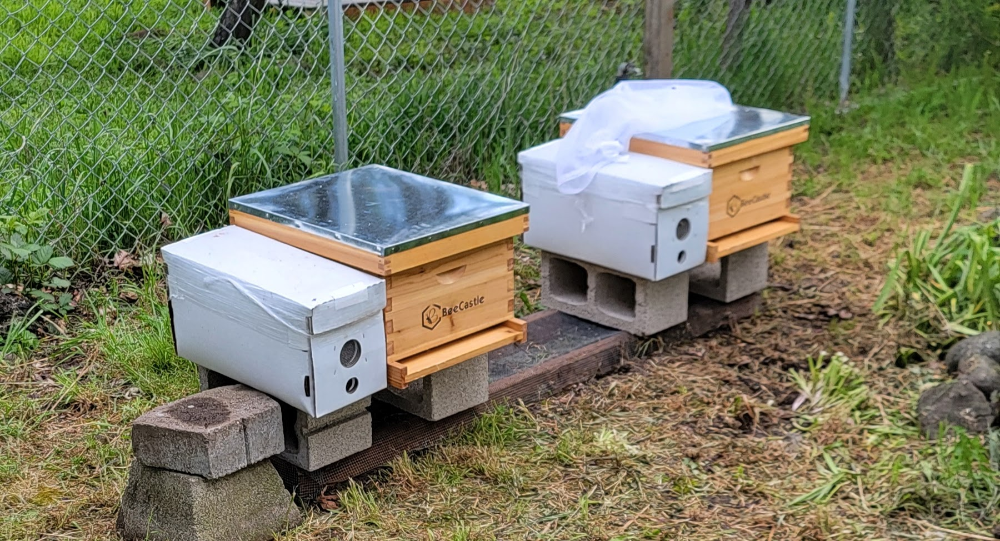
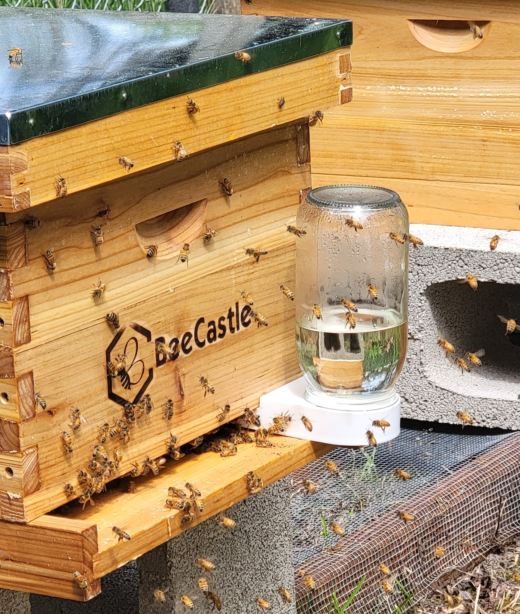
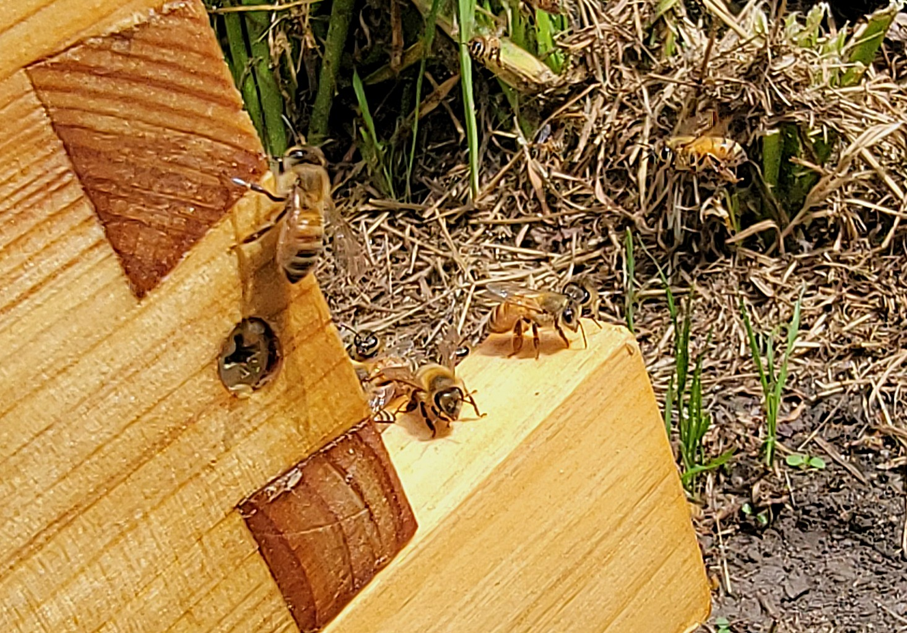
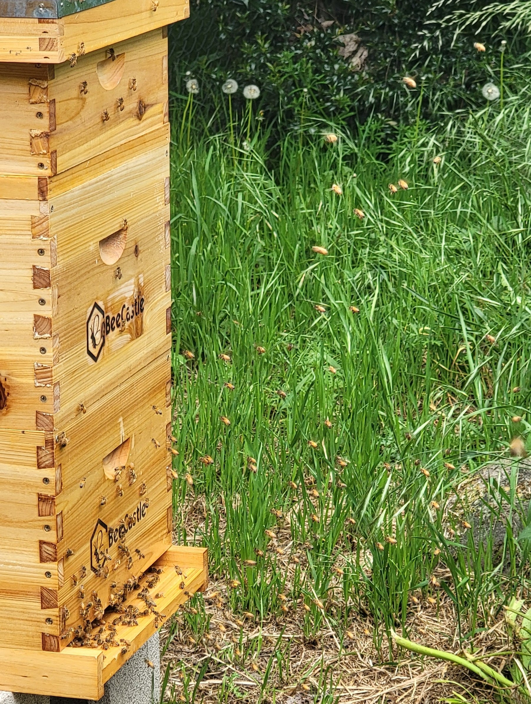
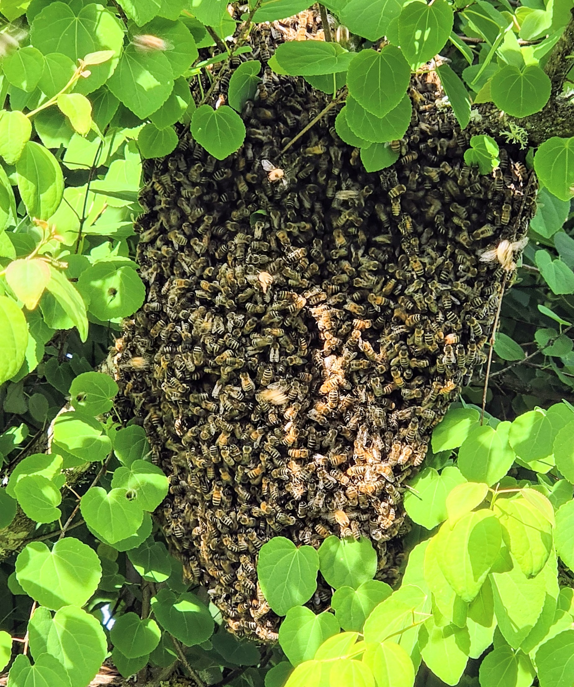
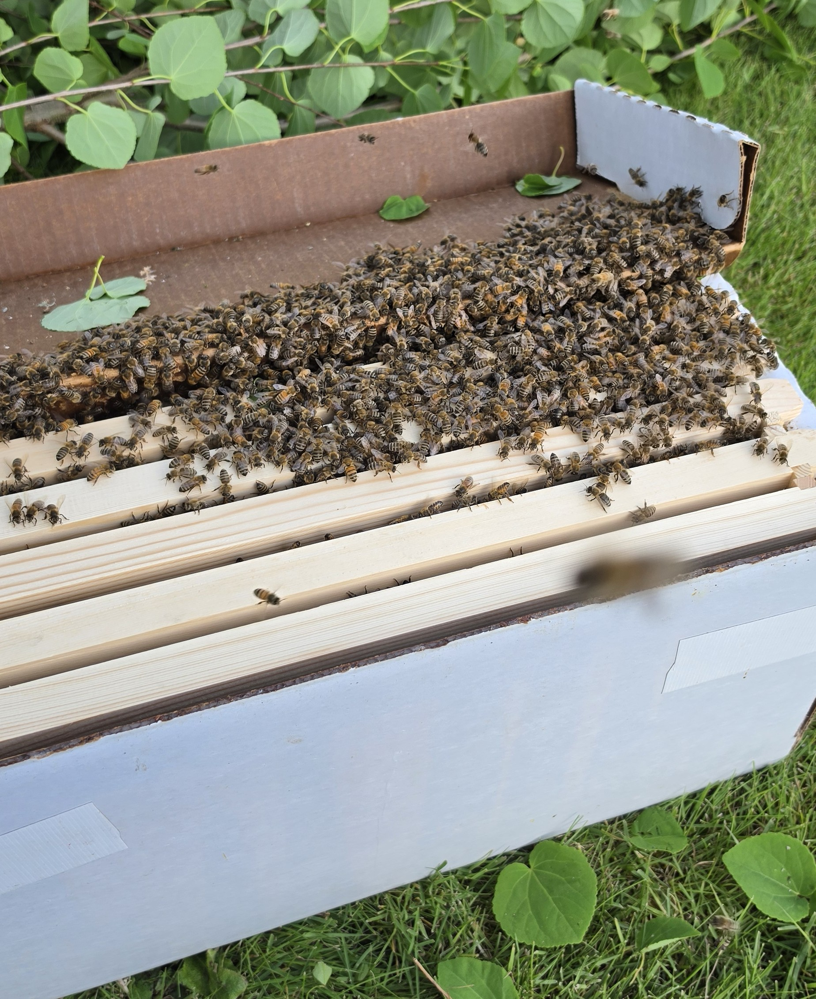
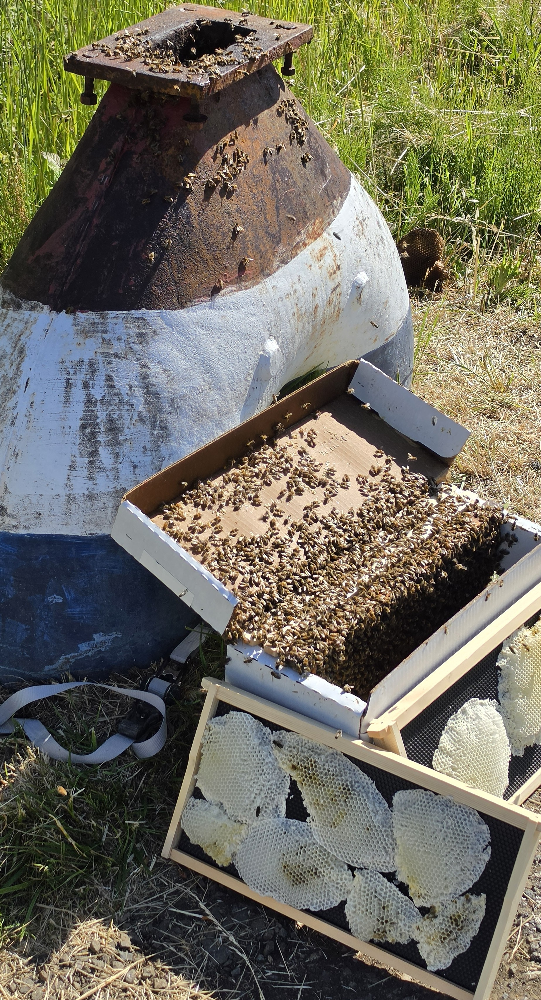
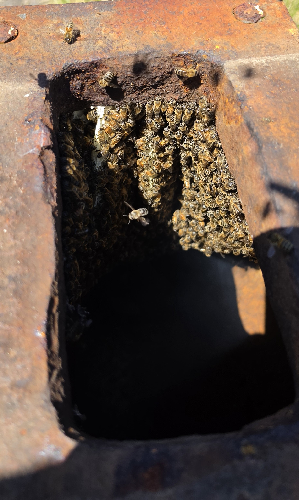

Every colony teaches something different. From founding nucs to swarm recoveries, these bees have helped shape the story of HoneyTide Apiary and the beekeeper behind it.
HoneyTide Apiary began with a small number of colonies and a growing commitment to stewardship, education, and sustainable beekeeping. Each hive has its own rhythm, temperament, strengths, and lessons.

Zion and Tortooga arrived as HoneyTide's first nucleus colonies in spring 2026. From that starting point, the apiary began to grow through hands-on learning, careful observation, and the unexpected opportunities that come with swarm season.

Zion
Zion arrived as one of HoneyTide's founding colonies and quickly demonstrated exceptional strength and vigor. The beekeeper who prepared the nuc described the colony as strong and advised that they be transferred into a larger hive as soon as they arrived home.
From the beginning, Zion showed steady expansion, strong brood production, active foraging, and confident colony growth. As one of HoneyTide's strongest early hives, Zion has become a benchmark colony and an important teacher in understanding what a healthy, expanding hive can accomplish when given space, resources, and careful stewardship.


Tortooga
Tortooga arrived alongside Zion as one of HoneyTide's original colonies. While not developing with the same explosive growth as its sister colony, Tortooga has offered lessons of a different kind.
Through periods of slower development, careful monitoring, and changing colony needs, Tortooga has taught the importance of patience, observation, and responding to what the bees are actually showing. Every hive grows in its own rhythm, and Tortooga continues to remind HoneyTide that stewardship is not about forcing growth, but understanding it.


Butera
Butera became HoneyTide Apiary's first successful swarm capture. Named after the family whose property hosted the swarm, Butera represents one of the earliest moments where HoneyTide was able to preserve a wild colony and give it a managed home.
What began as a cluster of bees gathered in a tree became an opportunity to learn, respond, and grow. Butera is a reminder that beekeeping often begins by paying attention when nature presents an opening.


The Anchor Colony
The Anchor Colony was one of HoneyTide's most unique recoveries. Originally discovered living inside a mailbox anchor, the bees had transformed an unexpected space into a functioning home.
Their relocation required patience, careful observation, and a willingness to adapt. The experience reinforced HoneyTide's belief that honey bees are remarkably resilient and that colony preservation should be prioritized whenever possible.
HoneyTide Apiary is committed to growing responsibly through sustainable colony management, pollinator education, swarm recovery, and continued participation in Oregon's beekeeping community.
Future goals include expanding colony numbers, supporting pollinator awareness throughout Lane County, continuing education through the Oregon State University Master Beekeeper Program, and sharing the ongoing story of HoneyTide through seasonal updates and community outreach.